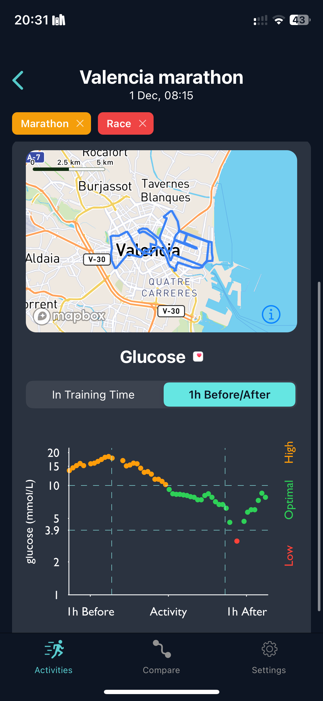

Caution: Nothing in this blog is medical advice. Diabetes is highly individual. Bolusing during a marathon carries very real risks. Talk to your healthcare team before experimenting.
Context: I run 100+ km per week in build phases. My body is adapted to high volume. What I lay out here may well be a product of my unique circumstances.
0% time in range. Entire marathons above 14 mmol/L. Crossing the finish line feeling like I'd run through treacle. You train for months, nail the fitness, and then your glucose decides to do its own thing.
It's frustrating. Really frustrating.
Then came Malaga.
The Conventional Wisdom
The standard T1D advice: disconnect your pump 60-90 minutes before, let basal tail off, trust exercise to handle glucose.
I followed it. Here's what happened:
| Race | Strategy | TIR |
|---|---|---|
| London '23 | Pump off 90min before. No insulin during. | 0% |
| London '24 | Pump off. 1-2 small boluses. Relaxed pace. | 97% |
| Valencia '24 | Pump off. Unfamiliar hotel breakfast. Reactive bolusing. | 53% |
| London '25 | Pump off at start. 1 bolus mid-race. | 41% |
| Malaga '25 | Pump never disconnected. Proactive micro-boluses. | 93% |
Two successes. Three disasters. What changed?
The Carb Load
I always take 4-5 Beta Fuel gels per marathon. That's 160-200g of carbs in under three hours. These gels use a 1:0.8 maltodextrin-to-fructose ratio, optimised to maximise absorption through two separate intestinal pathways.
Getting carbs into your blood isn't the problem. Getting them into your muscles is.
The Science Gap
Scientists still don't fully understand how muscles take up glucose during exercise. Exercise opens up GLUT4 transporters for glucose to enter cells without insulin.
When you disconnect your pump, you rely almost entirely on these non-insulin mechanisms. They work. To a point. But my data suggests that point is below 200g of fast carbs.
The Cortisol Factor
Pre-race nerves spike cortisol. Cortisol increases insulin resistance. You start with your system working against you.
London '24 was different. I was recovering from illness and had dropped my A goal. I wasn't racing. Less stress, less cortisol, less resistance. When I actually cared about the result? The small boluses weren't enough.
What Changed in Malaga
1. I never disconnected my pump
Background insulin kept running. The basal prevented the runaway hyper that sank Valencia and London '25.
2. I micro-bolused proactively
| Approach | Result |
|---|---|
| Reactive (Valencia) | Glucose hits 15+ → panic bolus → 20km chasing it down |
| Proactive (Malaga) | Glucose approaches 9 → 0.3-0.7u bolus → never spikes |
2-3 micro-boluses. 0.3-0.7 units each. Timed as glucose approached 9 mmol/L, not after it spiked.
Result: 93% TIR. Flat trace. For the first time, I ran a marathon where I could actually focus on running.
The Visual Proof

Same runner. Same gels. Same fitness. Different strategy, and a completely different experience.
What I Think Happened
Two factors seemed to matter:
- Having insulin available, whether basal or bolus
- Acting proactively, catching rises early, not chasing spikes
This is n=1. But the common thread across five marathons: I wasn't running on zero insulin and hoping exercise would save me.
I'm not recommending this strategy. Bolusing during a marathon carries real risk. Exercise increases insulin sensitivity. Hypos during endurance events are dangerous. Diabetes is individual.
- "Disconnect and trust exercise" didn't work for me
- The science on exercise glucose uptake is less complete than the advice suggests
- Five marathons of CGM data showed a clear pattern
- Changing my approach broke that pattern
How I Spotted the Pattern
These insights didn't come from memory. They came from actually sitting down and reviewing my data. I built Glucose Insights to do exactly this: filter to specific events, see glucose before, during, and after, and read the notes I left myself.
Laying five marathons side by side, I could finally see what was working and what wasn't. Without that, I'd still be guessing.